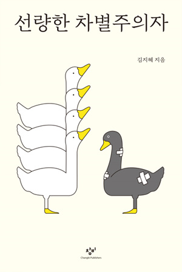

함께 세상을 살아가는 방법, 공존의 조건으로서 평등의 의미
내 이익이 걸렸을 때 더 나아가 새로운 결정으로 인해 내 생활에 위기가 찾아올때
난 어떤 선택을 할지 궁금하다;;
11
생각해보면 차별은 언제나 그렇다. 차별을 당하는 사람은 있는데 차별을 한다는 사람은 잘 보이지 않는다.
차별은 차별로 인해 불이익을 입는 사람들의 이야기다.
14
장애인에게 하는 '희망을 가지라'는 말 역시 전제 때문에 모욕적으로 받아들여진다. 희망을 가지라는 건 현재의 삶에 희망이 없음을 전제로 한다. 장애인의 삶에는 당연히 희망이 없다고 생각하는 것, 더 근본적으로는 자신의 기준으로 타인의 삶에 가치를 매기는 것이 모욕적이라고 했다.
34
나에게는 아무런 불편함이 없는 구조물이나 제도가 누군가에게는 장벽이 되는 바로 그때, 우리는 자신이 누리는 특권을 발견할 수 있다. 결혼을 할 수 있는 사람은 이를 특권이라 생각하지 않는다. 결혼을 할 수 없는 동성 커플이 나타나기 전까지는 말이다.
154
한국에서는 대중시설의 주인공이 인종, 피부색, 종교, 출신국가 등을 이유로 손님을 거부해도 아무런 규제가 없다.
178
서구 최초의 공공 공간은 그리스의 아고라로 기록된다. 아고라는 모두가 평등한 민주주의가 실천되는 공간이었다. 하지만 아고라에 입장할 수 있는 자격은 성인 남성에 한정되었고, 여성, 아동, 노예는 배제되었다.
184
성소수자에게 "왜 굳이 축제를 하나요?" "왜 굳이 커밍아웃을 하나요?"라고 묻는 질문 속에는, '성소수자'라는 기표가 아고라에 입장할 자격이 되지 못한다는 전제를 품고 있다.
이들을 향해 너희는 사적 영역에 남아 있어야 하며 공공의 장에서 보이지 않는 존재로 있으라고 요구다.
그렇기에 역으로 성소수자가 축제와 커밍아웃을 하는 이유가 더 분명해진다. 보이지 않는 성소수자에게 축제와 커밍아웃은, 보이는 존재로서 평등한 세계에 입장하고 민주적 토론에 참여하기 위해 낙인이 찍혀 있는 사적 기표를 공공의 장에 노출하는 행위다.
237
인정은 단순히 사람이라는 보편성에 대한 인정이 아니라 사람이 다양하다는 것, 즉 차이에 대한 인정을 포함한다.
집단의 차이를 무시하는 '중립'적인 접근은 일부 집단에 대한 배제를 지속시킨다.
245
밀이 우려했듯 이미 우리의 삶은 상당히 획일적인 형태로 굳어져 있다. 그러니 우리는 선택해야 한다. 불평등한 세상을 유지하기 위한 수고를 계속할 것인가? 아니면 평등한 세상을 만드는 불편함을 견딜 것인가?
247
그러니 내가 모르고 한 차별에 대해 "그럴 의도가 아니었다" "몰랐다" "네가 예민하다"는 방어보다는, 더 잘 알기 위해 노력을 기울였어야 했는데 미처 생각지 못했다는 성찰의 계기로 삼자고 제안한다.
268
함께 세상을 살아가는 방법, 공존의 조건으로서 평등의 의미를 생각해보면 좋겠다. 고정된 '옳은' 삶을 규정하지 않는 이 해체의 시대가 버겁고 혼란스러울 수도 있지만, 이는 인류가 지속적으로 갈구하는 자유를 획득하는 과정이기도 하다. 왕족이나 귀족이라는 소수가 누리던 자유를 민중이라는 다수가, 그리고 다음 단계로 사회 바깥에 놓여 있던 모두가 향유하게 될 때까지 세상은 아직 더 변해야 한다.